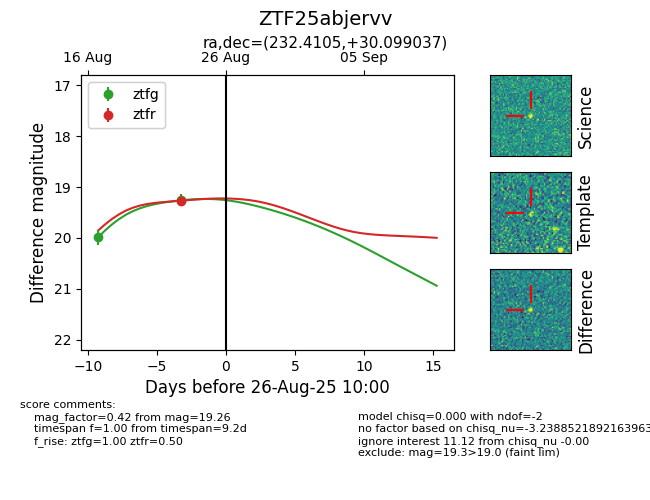

Target ZTF25abjervv at 2025-08-26 10:00, see:
FINK: fink-portal.org/ZTF25abjervv
Lasair: lasair-ztf.lsst.ac.uk/objects/ZTF25abjervv
ALeRCE: alerce.online/object/ZTF25abjervv
alt names
ZTF25abjervv (ztf,fink)
coordinates:
equatorial (ra, dec) = (232.4105,+30.09904)
galactic (l, b) = (47.3998,+55.32324)
photometry
last ztfg=19.26, ztfr=19.27
2 ztfg, 1 ztfr detections
